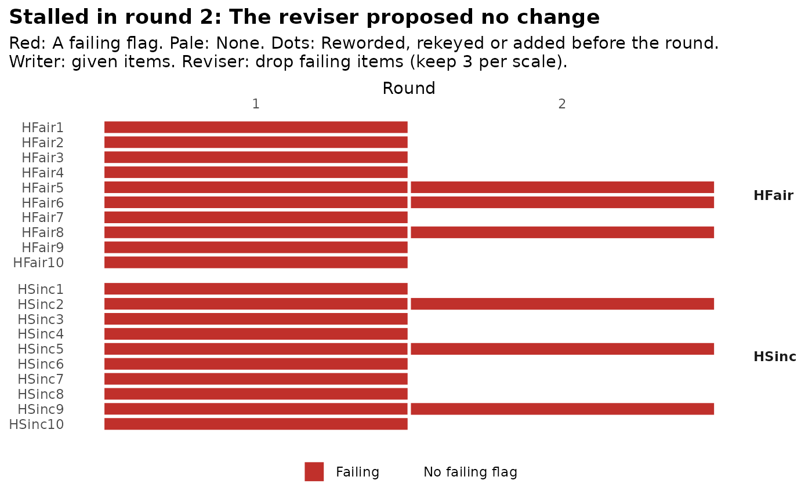

revision_loop() runs the cycle write, answer, check, revise and logs
every step. In each round, synthetic respondents answer the current items
(generate_synthetic()), an evaluator (the IRT checks of loop_irt()) and a checker (the data quality checks of
loop_checker()) flag problems, and a criterion (loop_criterion())
decides whether the items are polished. If they are not, a reviser
(a language model through loop_reviser_llm(), or the rules-based
loop_reviser_drop()) proposes edits, and the next round starts with the
edited items. The loop stops when the criterion passes ("polished"),
when max_rounds is reached ("max_rounds"), when the reviser proposes
no change ("stalled") or when a step fails ("error", with the rounds
done so far kept).
Usage
revision_loop(
construct,
items = NULL,
models = sc_model("mock"),
personas = NULL,
attempts = 1,
respondents = 100,
writer = NULL,
evaluator = loop_irt(),
checker = loop_checker(),
reviser = loop_reviser_drop(),
criterion = construct$criterion %||% loop_criterion(),
max_rounds = 10,
output = NULL,
run_id = NULL,
seed = 1,
cache = sc_cache(),
progress = interactive(),
...
)Arguments
- construct
- items
optional starting items: A data frame with
item,statement,scaleandreverse(as in hexaco_items, wheretraitalso works asscale).NULLasks thewriterfor them.- models
the respondent model(s), as in
generate_synthetic().- personas, attempts, respondents
as in
generate_synthetic(): Each round asks every model forattemptstimesrespondentsrespondents per persona.- writer
the item writer (see Steps), usually
loop_writer_llm(). Needed whenitemsisNULL.- evaluator
the IRT checks; by default
loop_irt().NULLskips them.- checker
the data quality checks; by default
loop_checker().NULLskips them.- reviser
the reviser:
loop_reviser_llm()for a language model, or the defaultloop_reviser_drop(), which only drops failing items, calls no model and is a useful baseline.- criterion
the stopping rule, a
loop_criterion(). By default the construct's own rule, if it has one (seeloop_builtin_construct()), or else the defaults ofloop_criterion().- max_rounds
the largest number of rounds.
- output
optional folder: The log tables are written there after every round, and the responses of each round to
responses/.- run_id
a name for the run.
NULLbuilds one from the construct andseed. Use one run id per replication when you run a design.- seed
random seed. Round
rgenerates its respondents with seed1000 * seed + r, so a run is repeatable and replications with different seeds draw different respondents.- cache
the response cache, as in
generate_synthetic().- progress
print one line per round?
- ...
further arguments to
generate_synthetic(), such asparallelorblock_size.
Value
An object of class sc_loop: A list with the seven log tables,
the final items, the construct and the responses of the last
round. It has print(), tidy() (table = "rounds" by default) and
autoplot() methods; gg_loop() draws it.
Details
The log. Every round is recorded in seven tables that share run_id
and round: runs, rounds, items, flags, stats, criteria and
edits. loop_log_schema() lists every column. Each edit names the
checks it responds to (cites), whether those checks were in fact
flagged on that item (cites_flagged), whether they are gone in the next
round (resolved) and how much of the wording changed (similarity).
These columns link each revision to the diagnostic that prompted it and
to its outcome. With output, the tables are written as CSV files after
every round, so a stopped run keeps the rounds it finished, and
read_loop() reads one run or a folder of runs back.
Steps. The steps are plain functions, so you can swap in your own (or another package's):
writer(construct, context)returns the first items: A data frame withitem,scale,reverseandstatement. It is used only whenitemsisNULL.evaluator(responses, items, context)andchecker(responses, items, context)return a list withflags(a data frame withitem,scale,check,value,threshold,severity("fail"or"warn") andmessage) andstats(a data frame withitem,scale,statandvalue;itemisNAfor scale-level values, and both areNAfor values over all items).reviser(items, flags, context)returns a list withedits(a data frame withitem,action("reword","rekey","drop","add"or"keep"),statement,reverse,scale,rationaleandcites, the checks the edit responds to, separated by commas) and optionallyreasoning(one note for the whole round). The loop applies the edits, so the log always matches the items.The writer and reviser may also return
usage, a list withinput_tokens,output_tokensandcost, which is logged.
context is a list with run_id, round, construct, instrument,
seed and history (the log tables so far). The writer and reviser get
it so that they can see earlier edits and avoid undoing them.
The same caveat as for the rest of the package applies: Items that look polished to synthetic respondents still need a field test with people. If the same model family writes and answers the items, "polished" may only mean "easy for language models to agree with", so cross the writer and respondent models and check the final items in a small real sample.
Examples
h <- hexaco_items[hexaco_items$facet %in% c("HSinc", "HFair"), ]
h$scale <- h$facet
con <- loop_construct("Honesty-Humility", scale = c(1, 7),
scales = c(HSinc = "Sincerity", HFair = "Fairness"))
# the mock provider answers at random, so every item fails and the
# rules-based reviser drops items until it cannot drop more
run <- revision_loop(con, h, sc_model("mock"), respondents = 40, max_rounds = 3,
evaluator = NULL, checker = loop_checker(n_pa = 5), cache = FALSE)
run
#> Item-revision loop "Honesty_Humility-seed1": stalled after 2 rounds
#> Writer: given items
#> Evaluator: none
#> Checker: synthcheck data quality (pretest and respondent screening)
#> Reviser: drop failing items (keep 3 per scale)
#> Stopping rule: no failing items; alpha >= 0.8; own_scale >= 0.9; careless_share <= 0.05; at least 3 items per scale
#>
#> round n_items n_failing n_passed n_criteria stop
#> 1 20 20 2 5 <NA>
#> 2 6 6 1 5 stalled
#>
#> Edits: 14 drop.
#>
#> The tables `rounds`, `items`, `flags`, `stats`, `criteria` and `edits` hold the log;
#> see loop_log_schema().
run$edits
#> # A tibble: 14 × 16
#> run_id round item action old_statement new_statement old_reverse new_reverse
#> <chr> <int> <chr> <chr> <chr> <chr> <lgl> <lgl>
#> 1 Hones… 1 HFai… drop I would neve… NA FALSE NA
#> 2 Hones… 1 HFai… drop I would not … NA TRUE NA
#> 3 Hones… 1 HFai… drop I would neve… NA FALSE NA
#> 4 Hones… 1 HFai… drop I cheat to g… NA TRUE NA
#> 5 Hones… 1 HFai… drop I cheat on p… NA TRUE NA
#> 6 Hones… 1 HSin… drop I don't pret… NA FALSE NA
#> 7 Hones… 1 HSin… drop I let people… NA TRUE NA
#> 8 Hones… 1 HSin… drop I tell other… NA TRUE NA
#> 9 Hones… 1 HSin… drop I put on a s… NA TRUE NA
#> 10 Hones… 1 HSin… drop I play a rol… NA TRUE NA
#> 11 Hones… 1 HSin… drop I pretend to… NA TRUE NA
#> 12 Hones… 1 HSin… drop I act like d… NA TRUE NA
#> 13 Hones… 1 HFai… drop I return ext… NA FALSE NA
#> 14 Hones… 1 HFai… drop I would feel… NA FALSE NA
#> # ℹ 8 more variables: scale <chr>, rationale <chr>, cites <chr>,
#> # cites_flagged <lgl>, resolved <lgl>, similarity <dbl>, applied <lgl>,
#> # note <chr>
gg_loop(run)

if (FALSE) { # \dontrun{
# GPT-4.1 mini writes and revises, Claude Haiku answers, mirt checks
con <- loop_builtin_construct("financial_wellbeing", population = "adults in Canada")
writer <- sc_model("openai", "gpt-4.1-mini")
run <- revision_loop(con, models = sc_model("anthropic"), respondents = 200,
writer = loop_writer_llm(writer),
reviser = loop_reviser_llm(writer),
output = "loops/hh-seed1", seed = 1)
} # }